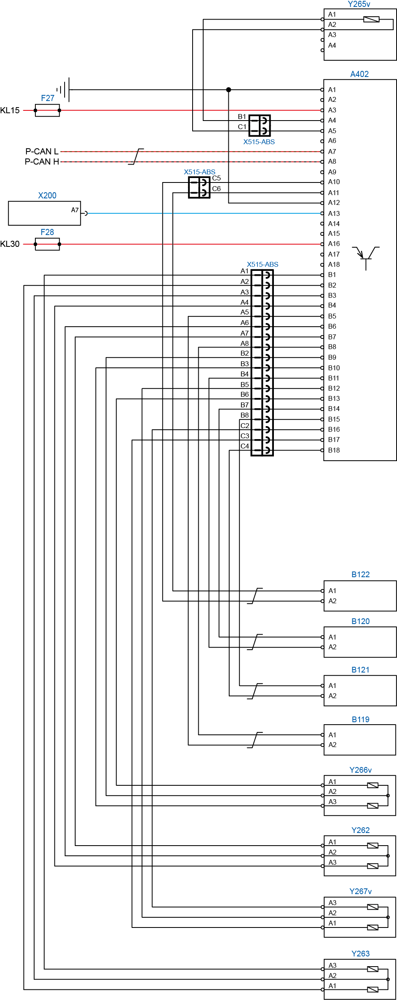

 
| A402 |
Módulo ABS |
| F30 |
Fusível 30A |
| F36 |
Fusível 5A |
| X200 |
Conector de diagnóstico (OBD) |
| X216v |
Conector do chassi (ABS) |
| X515-B |
Conector de interface B |
| X515-ABS |
Conector de interface ABS |
| Y265v |
Válvula ATC (Controle Automático de Tração) |
| B119 |
Sensor de rotação dianteiro esquerdo (ABS) |
| B120 |
Sensor de rotação dianteiro direito (ABS) |
| B121 |
Sensor de rotação trazeiro esquerdo (ABS) |
| B122 |
Sensor de rotação trazeiro direito (ABS) |
| Y262 |
Válvula moduladora dianteira direita (ABS) |
| Y263 |
Válvula moduladora dianteira esquerda (ABS) |
| Y266v |
Válvula moduladora traseira direita (ABS) |
| Y267v |
Válvula moduladora traseira esquerda (ABS) |
Descrição da Falha
Circuito do sensor de rotação, sensor trocado, instaldo no local errado (invertido).
Indicação de Falha
Luz de alerta da central acende constantemente com o símbolo  com o veículo andando ou parado. com o veículo andando ou parado.
Estratégia de Monitoramento
O
módulo ABS monitora a correta instalação dos componentes do sistema ABS.
Efeito da Falha
A
funcionalidade elétrica do sistema ABS é feita automaticamente e caso
seja detectada alguma anomalia, uma luz de advertência acende-se no
painel de instrumentos e o sistema ABS ficará inoperante parcialmente ou integralmente.
Possíveis Falhas
FMI 07: sensor trocado, instaldo no local errado (invertido).
Aviso
  O
ajuste de posicionamento do sensor em relação à roda dentada, ocorrerá
automaticamente no primeiro movimento da roda de acordo com a excentricidade do rolamento da roda, porém não poderá
ultrapassar a 0,6 mm. O
ajuste de posicionamento do sensor em relação à roda dentada, ocorrerá
automaticamente no primeiro movimento da roda de acordo com a excentricidade do rolamento da roda, porém não poderá
ultrapassar a 0,6 mm.
Registros de Falhas em Outros Módulos de Comando
Não.
Considerar os esquemas elétricos do veículo
| Verificação
| Medição
| Eliminação da Falha
|
Sensor de rotação/Módulo ABS
|
Instalação do sistema:
- Verifique a correta instlação dos componentes do sistema ABS.
Medir a resistência da bobina do sensor:
- Entre o pino A1 e A2 deve haver 1750 ohms +/- 175 ohms.
|
- Verifique se os sensores de rotação estão corretamente instlados. – Caso nenhuma falha seja verificada, substituir o sensor de rotação.
- Caso nenhuma falha seja verificada, substituir o Módulo ABS.
|
|